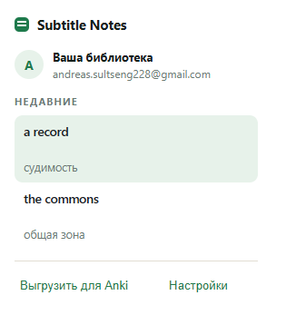
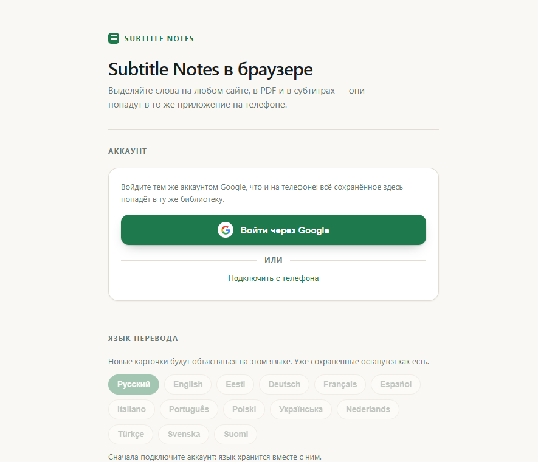

Subtitle Notes
Слово из фильма —
в том смысле, что здесь
Словарь переводит «No one wants a record» как «никто не хочет рекорд».
Subtitle Notes читает всю реплику и отвечает так, как перевёл бы дубляж:
«никому не нужна судимость». Слово остаётся в вашей библиотеке и через
день возвращается, чтобы вы его вспомнили.
No one wants a record.
судимость
Как это работает
-
Держите Ctrl и протяните по субтитру
Строка становится обычным текстом. Отпустили — плеер снова ваш:
субтитры перетаскиваются, клик ставит на паузу.
-
Перевод появляется сразу, слово сохраняется само
Никаких кнопок. Отменить можно в приложении — смахнуть карточку
в сторону.
-
Во всём остальном просто выделяйте
Страница, PDF, комментарий, субтитры в VLC. Всё попадает в одну
библиотеку.
Установка
Три места, один аккаунт
Войдите везде одним и тем же аккаунтом Google — библиотека будет общая.
Начать можно с чего угодно, остальное добавить потом.
ТЕЛЕФОН
Приложение
Установите Subtitle Notes из Google Play и войдите через Google.
Дальше выделяете текст в любом приложении, «Поделиться» → Subtitle Notes.
БРАУЗЕР
Расширение
Chrome, Edge или Opera. После установки откроется страница
с коротким вступлением и кнопкой «Войти через Google».
КОМПЬЮТЕР
Программа
Для субтитров в VLC и текста в любой программе по Ctrl+Alt+S.
Скачивается кнопкой в настройках расширения.
Про предупреждение Windows. Установщик не подписан
сертификатом, поэтому система покажет синее окно: нажмите «Подробнее»,
затем «Выполнить в любом случае». VLC программа настроит сама.
В браузере

Значок расширения: последние слова и выгрузка для Anki.

Настройки: язык перевода, клавиша для субтитров, где показывать окно.
В телефоне
Библиотека и повторение
Слова копятся сами. Раз в день приложение предлагает вспомнить те,
которым пора: сначала слово, потом — если не вспомнили — значение.
Знакомое возвращается всё реже, забытое — снова завтра.

Все слова, поиск и «повторить».

Повторение: вспомнил — вернётся позже.
Если перевод неточный. На карточке есть «Свой вариант»:
напишите, как правильно. Ваша карточка изменится сразу, а если так же
напишут ещё двое — вариант станет общим для всех.
Библиотека доступна и в браузере на любом компьютере:
subtitle-notes-api.andreas-sultseng228.workers.dev/library
Программа для Windows: github.com/mjandreas125/subtitle-notes/releases